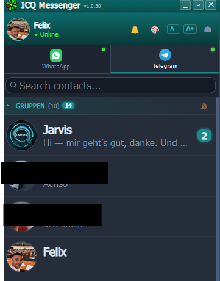

WhatsApp and Telegram in one retro ICQ messenger. Separate chat windows, the classic uh-oh! sound and switchable skins.
Free & open source · Windows · macOS · Linux · no sign-up needed
Everything modern messengers do, wrapped in the look you miss.
Both accounts in one app, cleanly split by tab. QR login, your real chats.
Every contact gets its own floating window, true ICQ 5 style.
ICQ Retro Dark, ICQ Retro Light and MSN Messenger. One click re-skins everything.
The legendary ICQ notification sound on every new message.
Voice messages, images, videos, GIFs, stickers, read receipts, typing indicator.
A single .exe, no install needed. Your login travels with the folder, USB stick included.
Screenshots straight from the running app. Contact names are blacked out for privacy, nothing else is retouched.

Three skins, built from pure CSS. The look of back then, without the old files.
The four questions everybody asks before downloading an .exe from a stranger.
Possibly, yes. ICQ Retrogram talks to WhatsApp's multi-device protocol directly, the same way other third-party clients do. WhatsApp's Terms of Service only permit their official apps, and they do act against unofficial clients. Nobody can promise you otherwise — do not use it on an account you cannot afford to lose.
There is no server of mine involved. The app connects from your machine straight to WhatsApp and Telegram, so nothing is routed through a third party. Your logins and chat cache stay in the local ICQ-Data folder. The whole source is on GitHub under MIT — you do not have to take my word for it, you can read it.
The builds are not code-signed — a certificate costs money a hobby project does not have. SmartScreen therefore flags every unknown publisher. Click "More info", then "Run anyway". On macOS, right-click the app and choose "Open". If that is not good enough for you, clone the repo and build it yourself.
No. This is an independent project with no connection to ICQ or AOL, and it does not revive ICQ's network. It rebuilds ICQ 5's interface and puts it on top of the messengers you already use — so there is no empty network, your contacts are simply already there.
Download ICQ Retrogram for free and connect your WhatsApp in 60 seconds.
Download free now